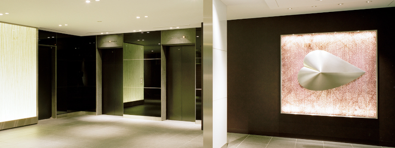

会社情報
お知らせ
トップ
|
お知らせ
| オフィス移転のお知らせ
オフィス移転のお知らせ
弊社は、事業拡大に伴う社員数増加のため、本社を
2020
年
9
月
10
日に移転したことをお知らせいたします。
新オフィス 外観（新横浜）

新オフィス エントランス（新横浜）
新オフィス 廊下（新横浜）
【新住所】
〒
222-0033
神奈川県横浜市港北区新横浜
3-6-12
日総第
12
ビル
1005
【交通アクセス】
・
JR
横浜線 新横浜駅
横浜アリーナ方面出口より徒歩
3
分
・横浜市営地下鉄ブルーライン 新横浜駅
3A
出口より徒歩
3
分